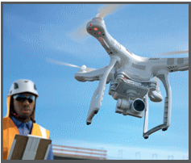
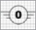
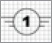
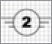
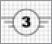
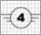

Unbemannte Luftfahrtsysteme – UAS |

| Übersicht offene Betriebskategorie | |||
| Unterkategorie | UAS-Klasse | Betriebsbereich max. 120 m AGL |
Qualifikation |
| A1 nahe Menschen |
 < 250 g |
Überflug unbeteiligter Personen, aber kein Überflug von Menschenansammlungen | Betriebsanleitung |
 < 80 J oder 900 g |
kein Überflug unbeteiligter Personen, kein Überflug von Menschenansammlungen | Betriebsanleitung Online-Training (LBA) & Online-Prüfung (LBA) |
|
| A2 sichere Distanz zu Menschen |
 < 4 kg |
30 m / 5 m Sicherheitsabstand zu unbeteiligten Personen | Betriebsanleitung Prüfung (PStF) und praktisches Selbststudium |
| A3 weit von Menschen entfernt |
 < 25 kg |
Betrieb in einem Gebiet in den man keine Personen erwartet und sicherer Abstand min. 150 m zu Wohn-, Gewerbe-, Industrie- oder Erholungsgebieten | Betriebsanleitung Online-Training (LBA) & Online-Prüfung (LBA) |
 < 25 kg |
|||
08/2021